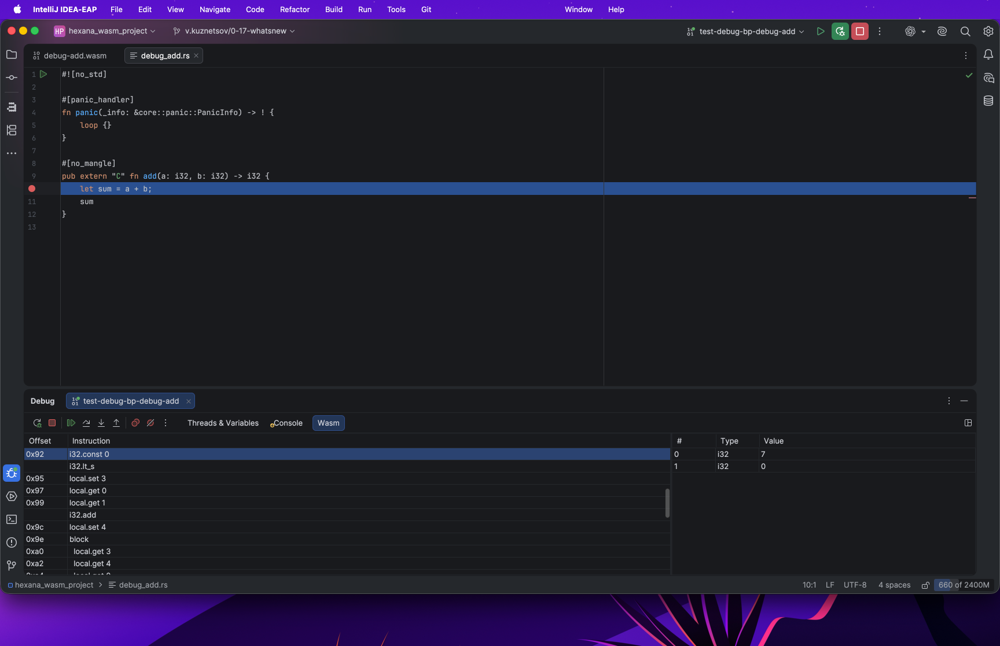
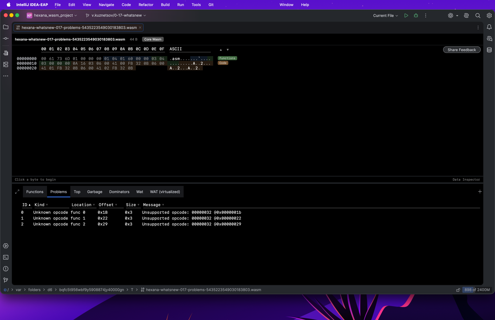
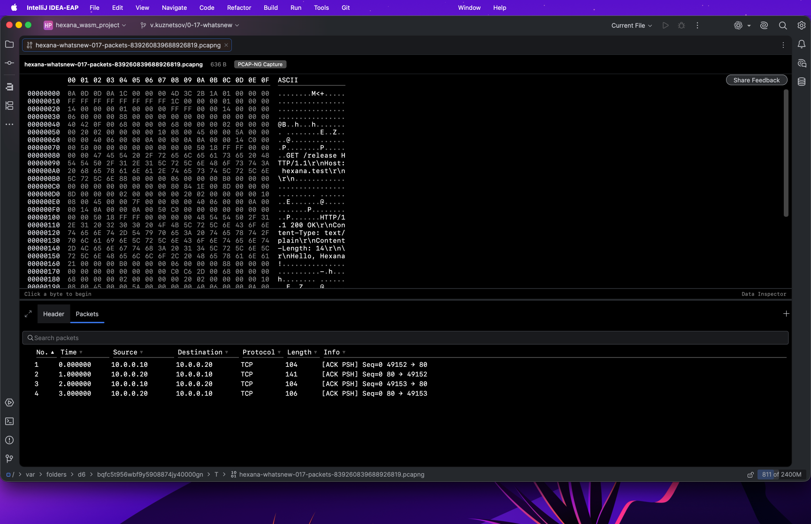

Hexana update
What's New in Hexana 0.17
Hexana 0.17 focuses on WASM debugger, WASM inspection, and Network captures while refining binary inspection inside JetBrains IDEs.
WASM debugger
Step through paused WASM at instruction precision
The Wasm debugger tab shows the paused function, current instruction, and operand stack for Node.js, browser, and wasmtime sessions.
- Wasm tab in the debugger when debugging a wasm module under Node.js or a browser. The left pane disassembles the paused function to WAT (same mnemonics and symbolic
call $nameoperands as the WAT view, block bodies indented) with the current instruction. - The Wasm debugger tab now also appears when debugging under wasmtime. The left pane disassembles the paused function with the current wasm instruction selected.

WASM inspection
Keep investigating modules with parse problems
The Problems tab preserves the readable part of a module and links each unparsed region back to WAT or its original bytes.
- Problems tab for WASM binaries. When the parser hits bytes it cannot decode (for example instructions from a not-yet-supported proposal), it no longer discards the whole function body.
- Opening the Dependencies tab of a Component Model binary crashed with
NotImplementedErrorwhen the core-instance section contained an entry the parser cannot decode. Such entries are now recorded as parse problems instead: an unknown instance-encoding tag consumes only the tag byte. - Navigating to a function in the WAT (virtualized) tab (from the Problems tab, go-to-function or search) landed on the wrong function in modules whose type section contains collapsed
(rec …)groups: every collapsed group member before the target shifted the scroll one row further (clicking func 25 landed on func 83 in a 216-type WasmGC module). The scroll index now accounts for group-collapsed rows.

Network captures
Inspect PCAP and PCAPNG packets
Open packet captures in Hexana, browse their packets, and open HTTP response bodies in a separate tab.
- Basic support for pcap/pcapng files - viewing packets, opening http response body in a new tab.

Also in 0.17
- Debug source-level state with more context Conditional breakpoints, reconstructed inlined frames, and DWARF-backed linear-memory variables make optimized and unoptimized WASM sessions easier to understand.
- Open TAR entries and gzip-compressed binaries directly Browse TAR entries in Hexana and inspect supported files such as .wasm.gz without manually unpacking them first.
- Read current WasmGC custom descriptors Type sections using custom-descriptor encodings now retain their alignment, so modules from current Kotlin/Wasm and J2CL toolchains remain inspectable.